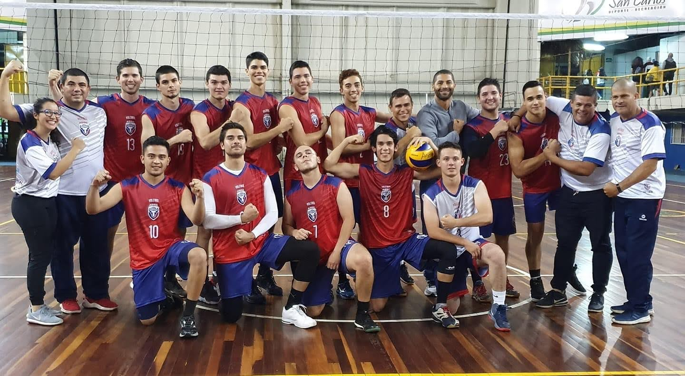
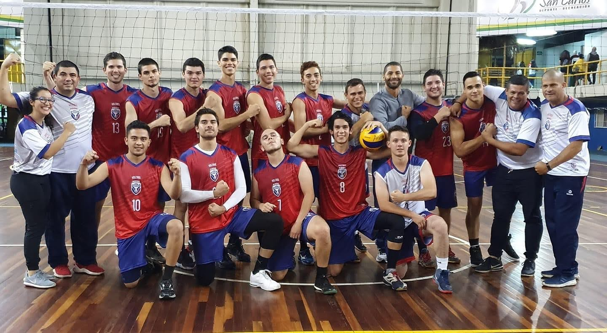

Información Personal
Fecha de nacimiento: 04/noviembre/2000
Edad: 21 años
Estatura: 1.94 cm
Peso: 96 kg
Residencia: La Fortuna, San Carlos, Costa Rica
Fecha de nacimiento: 04/noviembre/2000
Edad: 21 años
Estatura: 1.94 cm
Peso: 96 kg
Residencia: La Fortuna, San Carlos, Costa Rica
Fui jugador de primera division en el equipo de San Carlos voleibol, en los cuales he ganado torneos importantes como:
Han sido experiencias provechosas a lo largo de mi vida, la cual podré recordar momentos increibles, momentos que creamos historia para el cantón de San Carlos, porque desde hace más de 30 años no ganaban un torneo de voleibol, y el equipo que son increibles jugadores, logramos acabar con esa racha. Estuve en selecciones nacionales, en la sub21 y la sub23 dos años, gracias a Dios me fui excelente, fueron experiencias increibles
 

El colegio, hasta noveno año lo terminé en el Colegio Agropecuario de San Carlos, Y el bachillerato lo saque en el Liceo Rural SonaFluca, es un colegio academico, Actualmente estoy cursando la carrera de Ingenieria en Software, en la Universidad Técnica Nacional.
Aparte de esos trabajos tengo dos emprendimientos los cuales son: